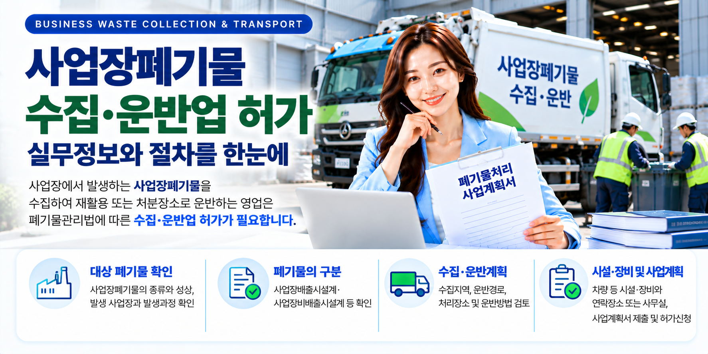
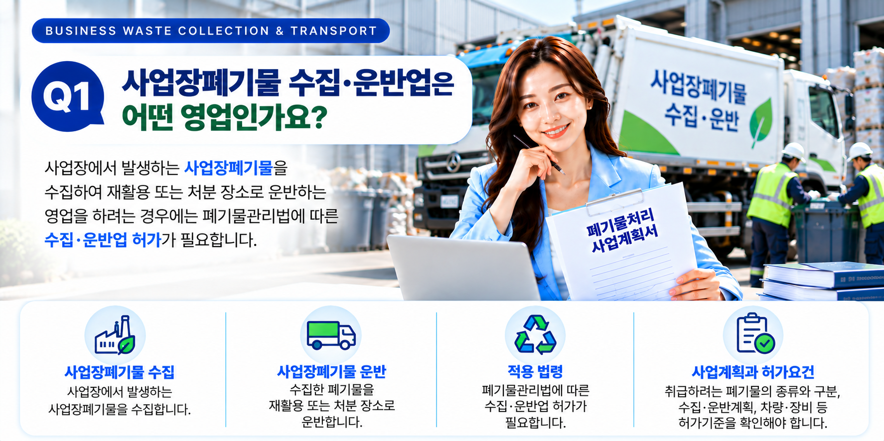
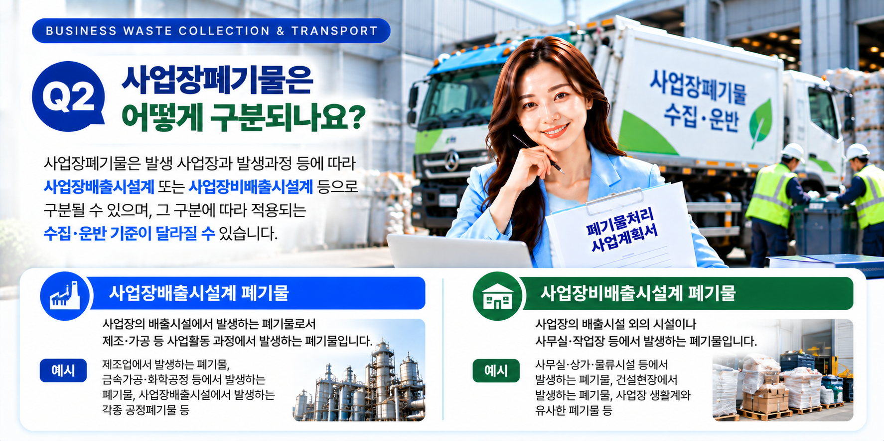
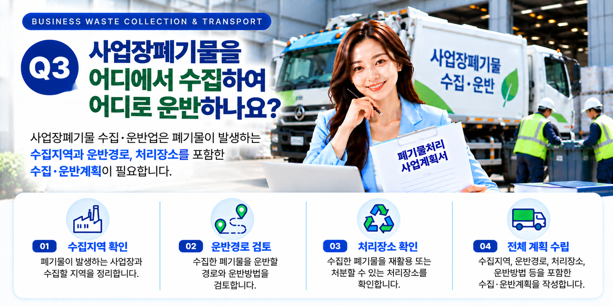

사업장폐기물 수집·운반업을 준비할 때에는 차량부터 준비하기보다 어떤 폐기물을 수집·운반하려는 것인지, 그 폐기물이 어느 구분에 해당하는지를 먼저 확인하는 것이 중요합니다. 폐기물의 종류와 발생과정 등에 따라 적용되는 수집·운반 기준과 필요한 차량·장비가 달라질 수 있기 때문입니다. 대상 폐기물을 확인한 후 수집지역과 운반경로, 처리장소 및 시설·장비 확보계획을 정리하여 사업계획서 제출과 허가절차를 준비하는 것이 좋습니다.
01. 사업장폐기물 수집·운반업이란?
사업장에서 발생하는 폐기물을 수집하여 재활용 또는 처분할 수 있는 장소로 운반하는 영업을 하려는 경우에는 폐기물관리법에 따른 수집·운반업 허가절차를 검토해야 합니다.
이때 단순히 '사업장에서 나온 폐기물'이라는 사실만으로 동일한 기준이 적용되는 것은 아닙니다.
폐기물의 종류와 발생 사업장, 발생과정 및 성상 등을 확인하여 실제 어떤 폐기물 구분에 해당하는지부터 검토하는 것이 중요합니다.

02. 사업장폐기물의 구분부터 확인합니다
사업장일반폐기물은 발생 사업장과 발생과정 등에 따라 사업장배출시설계 폐기물과 사업장비배출시설계 폐기물 등으로 구분하여 검토할 필요가 있습니다.
이러한 구분은 단순한 명칭상의 차이가 아니라 실제 수집·운반 주체와 처리방법 및 적용되는 기준을 확인하는 데 중요한 요소가 됩니다.
| 확인사항 | 주요 내용 |
|---|---|
| 폐기물 종류 | 실제로 수집·운반하려는 폐기물이 무엇인지 확인 |
| 폐기물 성상 | 고체·액체 등 폐기물의 상태와 특성 확인 |
| 발생 사업장 | 어떤 사업장에서 폐기물이 발생하는지 확인 |
| 발생과정 | 어떤 시설이나 작업과정에서 발생하는지 확인 |
| 폐기물 구분 | 사업장배출시설계·사업장비배출시설계 등 해당 구분 검토 |

03. 수집지역·운반경로·처리장소를 구체화합니다
대상 폐기물을 확인했다면 실제 영업에서 폐기물을 어디에서 수집하여 어디로 운반할 것인지 구체적으로 정리해야 합니다.
폐기물이 발생하는 사업장과 수집지역, 운반경로 및 최종적으로 운반할 재활용 또는 처분 장소 등을 사업계획과 함께 검토하는 것이 좋습니다.
- 폐기물이 발생하는 사업장
- 폐기물을 수집하려는 지역
- 폐기물의 수집방법
- 폐기물의 운반방법과 운반경로
- 재활용 또는 처분할 처리장소

04. 차량·장비는 대상 폐기물을 확인한 후 검토합니다
수집·운반업에 필요한 차량과 장비는 취급하려는 폐기물의 종류와 성상, 수집·운반방법 등을 기준으로 검토해야 합니다.
따라서 차량을 먼저 구입한 뒤 허가기준에 맞추는 방식보다는 영업대상 폐기물과 사업계획을 먼저 정리하고 그에 맞는 시설·장비 기준을 확인하는 것이 좋습니다.
특히 액체상태인지 고체상태인지 등 폐기물의 성상에 따라서도 적합한 운반방법과 차량을 별도로 검토할 필요가 있습니다.
05. 폐기물처리 사업계획서를 제출합니다
폐기물 수집·운반업 허가를 받으려는 경우에는 일반적으로 허가신청에 앞서 폐기물처리 사업계획서를 제출하여 사업계획의 적합 여부를 검토받게 됩니다.
수집·운반업의 경우 사업계획과 함께 수집·운반대상 폐기물의 수집·운반계획 및 시설·장비 등의 확보계획을 정리해야 합니다.
- 수집·운반하려는 폐기물의 종류
- 폐기물의 수집·운반계획
- 수집지역과 운반경로
- 재활용 또는 처분할 처리장소
- 차량 등 시설·장비 확보계획
- 연락장소 또는 사무실 관련사항
06. 적합통보 후 허가요건을 갖추어 허가를 신청합니다
사업계획서를 검토한 결과 적합통보를 받았다면 통보된 사업계획에 따라 필요한 시설·장비 등의 허가요건을 갖추어 허가신청을 진행하게 됩니다.
폐기물 수집·운반업은 사업계획 적합통보를 받은 날부터 원칙적으로 6개월 이내에 허가를 신청해야 합니다.
따라서 적합통보를 받은 후에 차량·장비와 필요한 요건을 준비할 수 있는 기간까지 고려하여 사업계획 단계에서부터 실제 준비일정을 함께 검토하는 것이 좋습니다.
07. 전체 허가절차는 어떻게 진행될까요?
사업장폐기물 수집·운반업은 일반적으로 다음과 같은 순서로 준비합니다.
특히 첫 단계에서 대상 폐기물의 종류와 구분을 정확하게 확인해 두어야 이후의 수집·운반계획과 차량·장비 및 사업계획서를 일관성 있게 준비할 수 있습니다.
08. 신청 전 최종 확인사항
사업계획서를 제출하기 전에는 다음 사항을 다시 한번 확인하는 것이 좋습니다.
- 수집·운반하려는 사업장폐기물의 종류와 성상이 명확한지 확인합니다.
- 폐기물이 발생하는 사업장과 발생과정을 확인합니다.
- 사업장배출시설계·사업장비배출시설계 등 폐기물의 구분을 검토합니다.
- 수집지역과 운반경로 및 처리장소를 확인합니다.
- 폐기물의 성상과 운반방법에 맞는 차량·장비 기준을 확인합니다.
- 차량·장비의 실제 확보방법을 검토합니다.
- 연락장소 또는 사무실 관련사항을 확인합니다.
- 사업계획서와 실제 사업내용이 서로 일치하는지 확인합니다.
사업장폐기물 수집·운반업을 준비하고 계신가요?
간단한 자가진단을 통해 대상 폐기물의 종류와 구분, 수집·운반계획 및 차량·장비 등의 준비상태를 먼저 확인해 보세요.
※ 사업장폐기물 수집·운반업의 구체적인 허가요건과 시설·장비 기준 및 제출자료는 대상 폐기물의 종류·성상, 사업내용과 관할 행정기관의 검토사항 등에 따라 달라질 수 있습니다. 실제 신청 전에는 대상 폐기물의 정확한 구분과 적용되는 최신 기준을 함께 확인하는 것이 좋습니다.